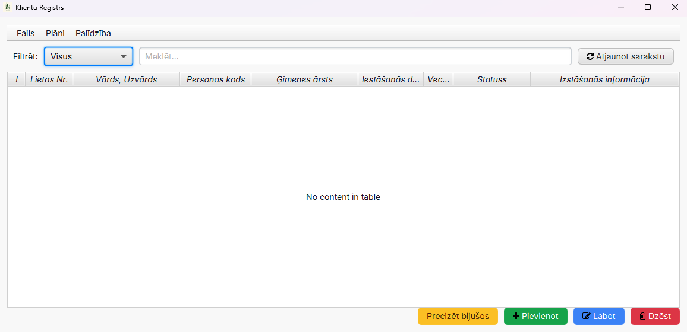
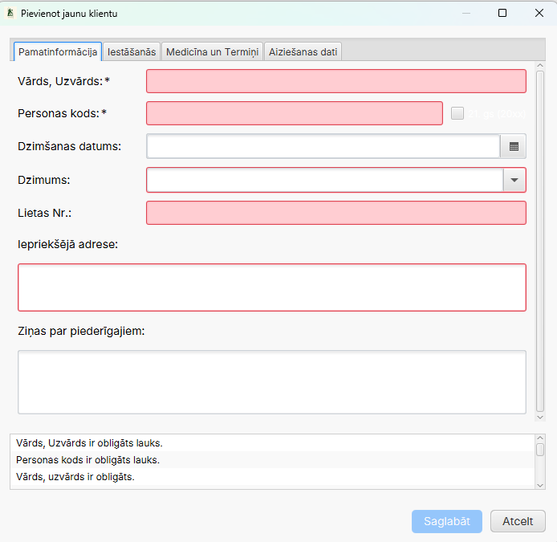
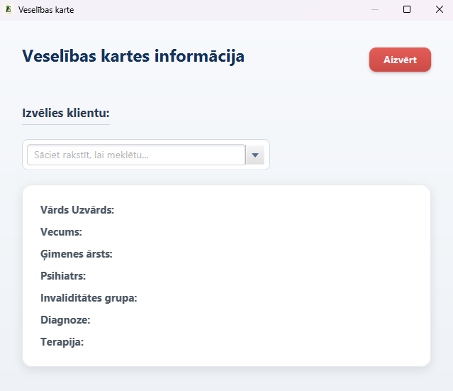
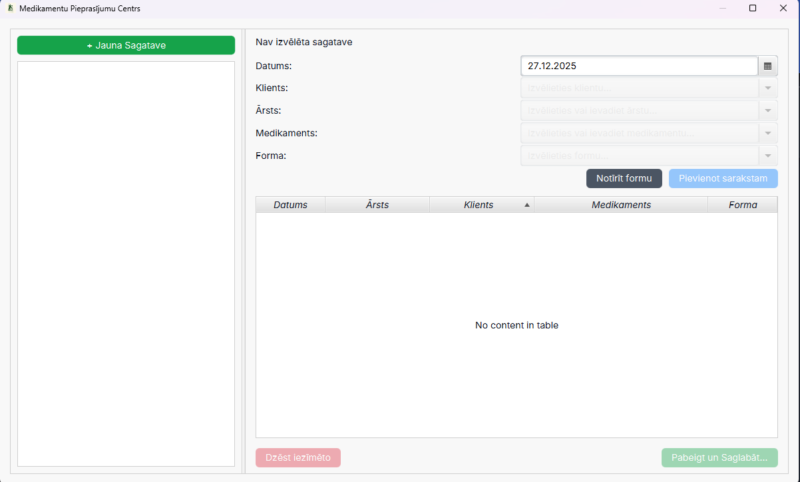
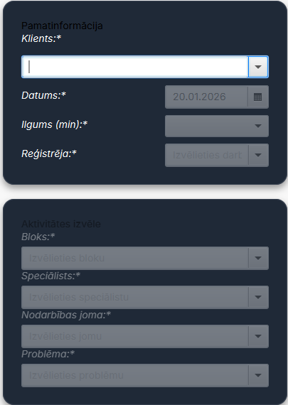
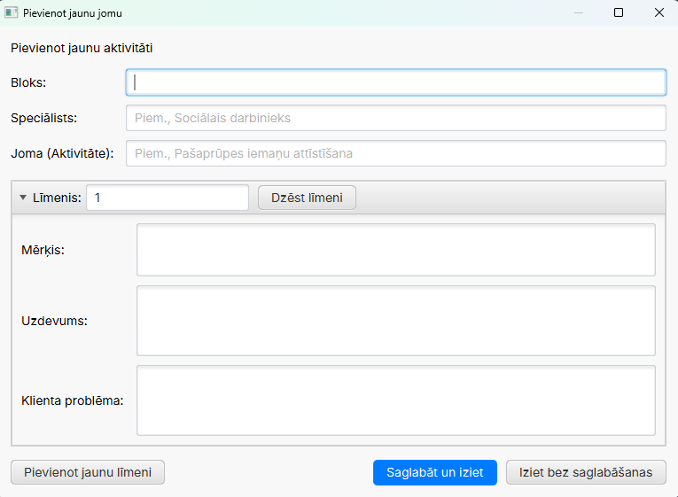

Kāpēc tas ir svarīgi?
- Pieredzes sinerģija: 13 gadi sociālajā darbā sastopas ar modernu programmēšanu.
- Mērķis: Radīt rīku, kas nevis sarežģī, bet atvieglo speciālista ikdienu.
- Jēga: Atgriezt sociālajam darbiniekam laiku, ko šobrīd atņem birokrātija.










